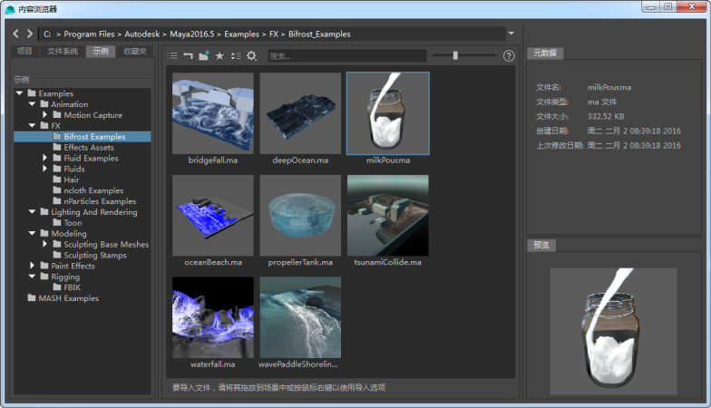

除了学习资源外，您还可以在多个位置中找到要用于 Maya 的有用工具和内容：
- 打开内容浏览器，然后在多种内容类型（从 3D 模型到粒子和液体效果）的示例场景中拖动。

- 转到 Autodesk Character Generator 网站，生成完全装备的自定义 3D 角色并将其导入到 Maya，从中获得乐趣。还可以选择(Help > Try Other Autodesk Products > Character Generator)来打开此站点。

-
Bonus Tools 是一些很有用的 Maya 脚本和插件的免费集合。还可以选择(Help > Maya Resources and Tools > Download Bonus Tools)来打开此页面。
附赠工具通常可以解决使用常规 Maya 工具可能无法执行的特定问题。如果发现对许多人非常有用，其中许多工具会融入 Maya 应用程序中。AREA 上的 My Oh Maya! 博客中介绍了许多附赠工具。
- Autodesk App Store for Maya (Maya App Exchange) 是一个很好的资源，您可以从中购买和下载 Maya 开发人员社区提交的各种插件、工具和脚本。还可以选择(Help > Autodesk Exchange Apps)来打开此站点。
- 下载 FBX Review。这是一款可用于查看和共享 3D 资产的免费优化工具。还可以选择(Help > Try Other Autodesk Products > FBX Review > Marketplace)来打开此页面。